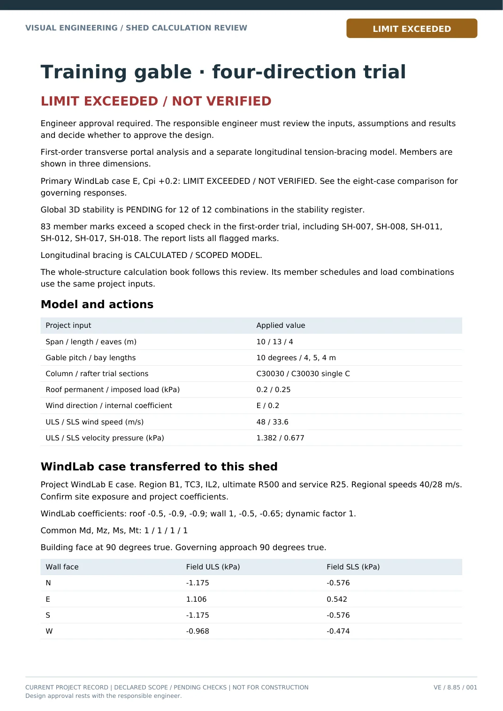

Four-direction shed wind comparison
Eight trials use the same 10 × 13 m closed gable shed. Each building face is checked with Cpi +0.20 and −0.30. Only the east exposure sector has the training topographic multiplier of 1.20. The example exceeds both portal and strap limits.
The review pages identify the member, direction and load combination that control each response. The full model and its site assumptions require review by the responsible engineer.
Loading the report…
